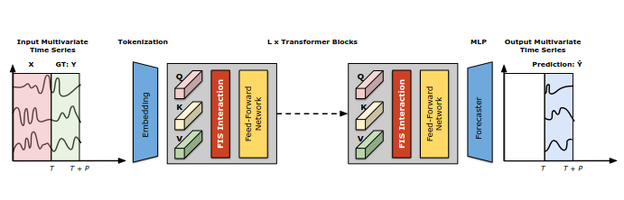
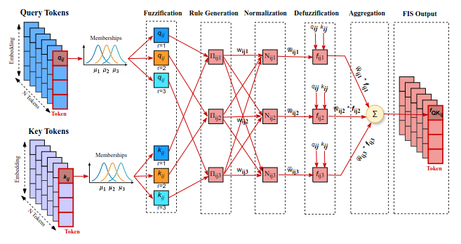
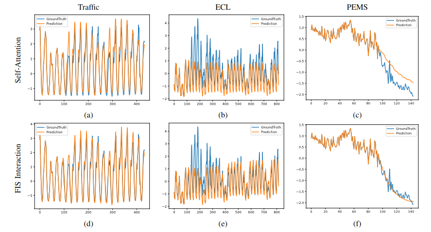
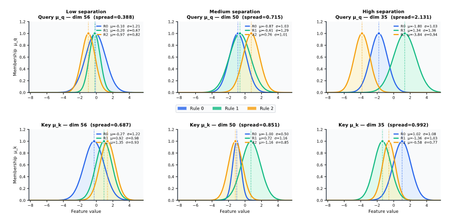

← Projeler
FISformer: Zaman Serisi Tahmini İçin Transformer Modellerinde Self-Attention'ı Bulanık Çıkarım Sistemi ile Değiştirmek
Proje Özeti
Transformer modelleri zaman serisi tahmininde büyük ilerleme kaydetmiş olsa da...

Şekil 1. Önerilen FISformer modelinin genel mimarisi.
Metodoloji: FIS Tabanlı Token Etkileşimi
FISformer, geleneksel dot-product (nokta çarpım) benzerlik hesaplaması yerine birinci dereceden Sugeno tipi bir Bulanık Çıkarım Sistemi (FIS) kullanır. Bu süreç dört ana aşamadan oluşur:
- Bulanıklaştırma (Fuzzification)...
- Kural Oluşturma (Rule Generation)...
- Durulaştırma (Defuzzification)...
- FIS Etkileşimi...

Şekil 2. FIS Tabanlı Token Etkileşimi.
Kullanılan Veri Setleri (Benchmark)
Tablo I. Girdi boyutları, örnek sayısı, tahmin dizisi uzunluğu ve zaman frekansı dahil olmak üzere detaylı veri seti açıklamaları.| Dataset | Dim | Prediction Length | Dataset Size | Frequency | Information |
|---|---|---|---|---|---|
| ETTh1, ETTh2 | 7 | {96, 192, 336, 720} | (8545, 2881, 2881) | Hourly | Electricity |
| ETTm1, ETTm2 | 7 | {96, 192, 336, 720} | (34465, 11521, 11521) | 15min | Electricity |
| Exchange | 8 | {96, 192, 336, 720} | (5120, 665, 1422) | Daily | Economy |
| Weather | 21 | {96, 192, 336, 720} | (36792, 5271, 10540) | 10min | Weather |
| ECL | 321 | {96, 192, 336, 720} | (18317, 2633, 5261) | Hourly | Electricity |
| Traffic | 862 | {96, 192, 336, 720} | (12185, 1757, 3509) | Hourly | Transportation |
| Solar-Energy | 137 | {96, 192, 336, 720} | (36601, 5161, 10417) | 10min | Energy |
| PEMS03 | 358 | {12, 24, 48, 96} | (15617, 5135, 5135) | 5min | Transportation |
| PEMS04 | 307 | {12, 24, 48, 96} | (10172, 3375, 3375) | 5min | Transportation |
| PEMS07 | 883 | {12, 24, 48, 96} | (16911, 5622, 5622) | 5min | Transportation |
| PEMS08 | 170 | {12, 24, 48, 96} | (10690, 3548, 3548) | 5min | Transportation |
Performans ve Ablasyon Analizi
Tablo II. Farklı tahmin uzunlukları üzerinden MSE ve MAE metrikleriyle ortalama tahmin performansı. En iyi sonuçlar kırmızı, en iyi ikinci sonuçlar mavi ile vurgulanmıştır.| Model | FISformer (Ours) | iTransformer (2024) | Crossformer (2023) | Fedformer (2022) | Autoformer (2021) | Informer (2021) | ||||||
|---|---|---|---|---|---|---|---|---|---|---|---|---|
| MSE | MAE | MSE | MAE | MSE | MAE | MSE | MAE | MSE | MAE | MSE | MAE | |
| ECL | 0.172 | 0.262 | 0.178 | 0.270 | 0.244 | 0.334 | 0.214 | 0.327 | 0.227 | 0.338 | 0.392 | 0.448 |
| ETT (Avg) | 0.375 | 0.395 | 0.383 | 0.399 | 0.685 | 0.578 | 0.407 | 0.428 | 0.465 | 0.459 | 1.342 | 0.859 |
| Exchange | 0.356 | 0.402 | 0.360 | 0.403 | 0.940 | 0.707 | 0.519 | 0.429 | 0.613 | 0.539 | - | - |
| Traffic | 0.417 | 0.279 | 0.428 | 0.282 | 0.550 | 0.304 | 0.610 | 0.376 | 0.628 | 0.379 | - | - |
| Weather | 0.256 | 0.277 | 0.258 | 0.278 | 0.259 | 0.315 | 0.309 | 0.360 | 0.338 | 0.382 | 0.574 | 0.552 |
| Solar-Energy | 0.232 | 0.261 | 0.233 | 0.262 | 0.641 | 0.639 | 0.291 | 0.381 | 0.885 | 0.711 | - | - |
| PEMS (Avg) | 0.122 | 0.219 | 0.119 | 0.218 | 0.220 | 0.304 | 0.224 | 0.327 | 0.614 | 0.575 | - | - |

Şekil 3. Tahmin sonuçlarının görselleştirilmesi.

Şekil 4. Öğrenilmiş Gauss üyelik fonksiyonları.
| Datasets | w/Self-Attention | w/FIS Interaction | Improvement | |||
|---|---|---|---|---|---|---|
| MSE | MAE | MSE | MAE | MSE | MAE | |
| ECL | 0.178 | 0.270 | 0.172 | 0.262 | 3.6% | 2.7% |
| ETT (Avg) | 0.383 | 0.399 | 0.375 | 0.395 | 2.1% | 1.1% |
| Exchange | 0.360 | 0.403 | 0.356 | 0.402 | 1.3% | 0.9% |
| Traffic | 0.428 | 0.282 | 0.417 | 0.279 | 2.6% | 1.2% |
| Weather | 0.258 | 0.278 | 0.256 | 0.277 | 0.6% | 0.3% |
| Solar-Energy | 0.233 | 0.262 | 0.232 | 0.261 | 0.3% | 0.6% |
| PEMS (Avg) | 0.119 | 0.218 | 0.122 | 0.219 | -2.4% | -0.7% |
Atıf (Citation)
Bu çalışmayı projelerinizde kullanırsanız lütfen makalemizi alıntılayın.
@article{haznedar2026fisformer,
title={FISformer: Replacing Self-Attention with a Fuzzy Inference System in Transformer Models for Time Series Forecasting},
author={Haznedar, Bülent and Karacan, Levent},
journal={IEEE Transactions on Fuzzy Systems},
volume={34},
number={2},
year={2026},
doi={10.1109/TFUZZ.2026.3690012}
}
İletişim (Contact)
Sorularınız veya kodun kullanımı hakkında detaylı bilgi için iletişime geçebilirsiniz:
- Bülent HAZNEDAR (haznedar@gaziantep.edu.tr)
- Levent KARACAN (lkaracan@gantep.edu.tr)